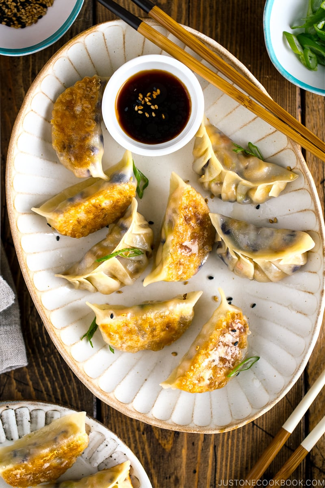

Veggie Gyoza

Who doesn't like gyoza?
Even if it is veggie, the dipping sauce alone you could drink.
It just takes a long time to wrap, so you may as well
go out and buy some.
Ingredients:
For Gyoza Filling
oz extra firm tofu
5 oz king oyster mushrooms (eringi)
2 oz shiitake mushrooms
3.5 oz red cabbage
5 oz cabbage
1 tsp kosher salt (Diamond Crystal; use half for table salt) (for dehydrating cabbage)
2 oz carrot
3 oz onion
2 green onions/scallions (1.6 oz, 44 g)
1 knob ginger
1 clove garlic
2 Tbsp potato starch or cornstarch
Method:
Wrap the tofu with a paper towel and place it on a tray/plate. Put another tray/plate on top of the tofu and press the tofu down with a heavy object or two, for roughly 30 minutes to 1 hour (I pressed for 2 hours this time; 400 g before pressing, 355 g after pressed). If you’re in a hurry, you can alternatively microwave (without plastic wrap) for 1.5 minutes (W1000) and drain the water.
Discard the tough core of cabbage leaves and cut into julienned pieces.
Mince the julienned cabbage into small pieces. Depending on your gyoza wrappers, it’s easier to tuck in smaller pieces in the wrapper than chunkier pieces.
Repeat the same for red cabbage. Discard the tough core of cabbage leaves and cut into julienned pieces.
In a large bowl, add the onion, two kinds of mushrooms, carrots, and green onions. Then add the minced garlic (I use my garlic press here).
Cook uncovered until the gyoza is nice and crisp on the bottom. Transfer to a plate and serve with dipping sauce. For the dipping sauce, combine the sauce ingredients in a small plate and mix it all together.